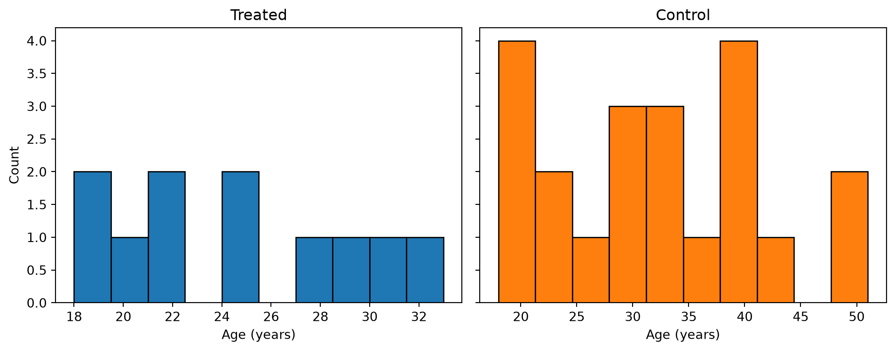
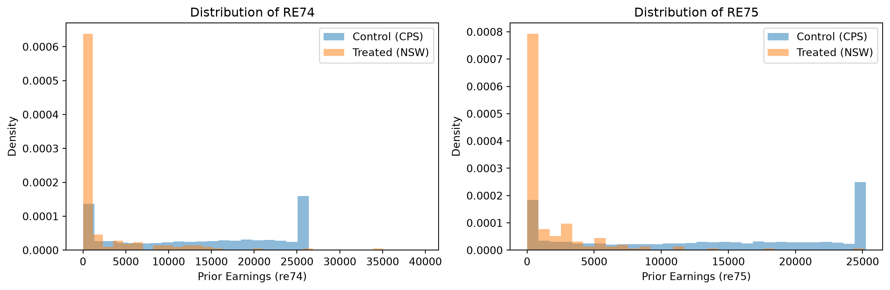
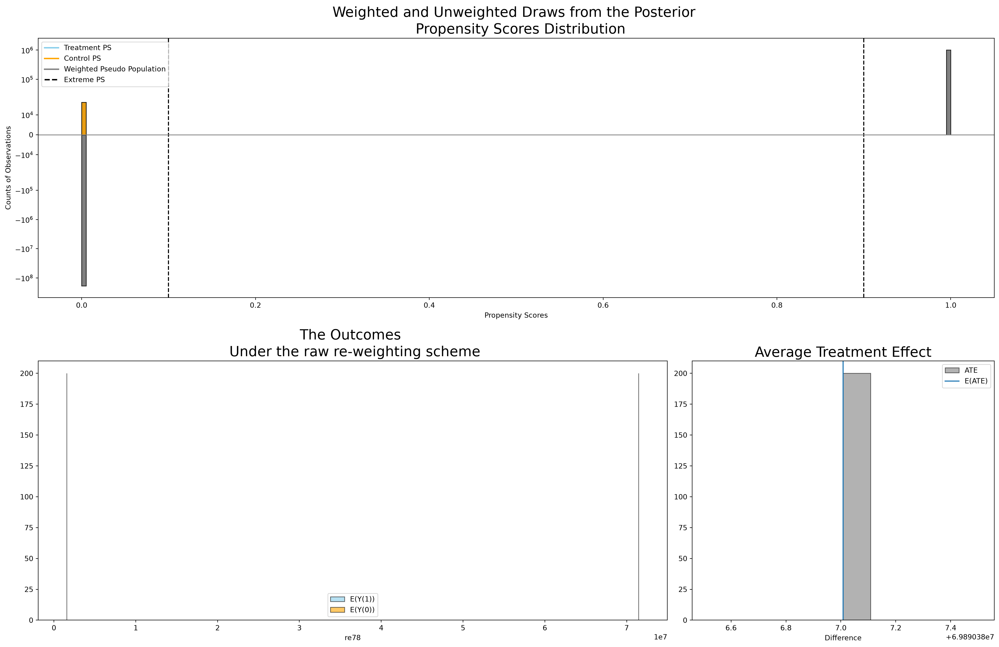
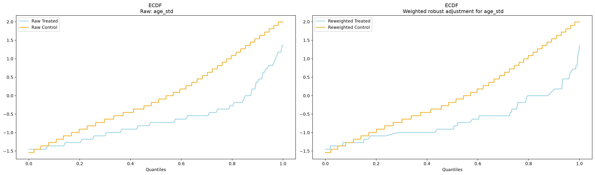
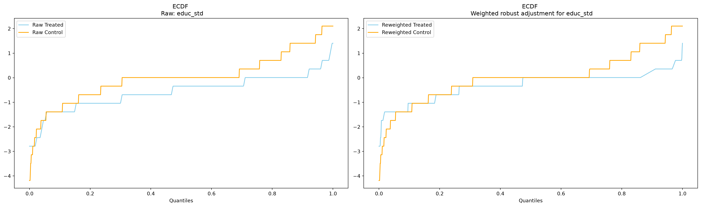

import warnings
warnings.filterwarnings("ignore")
import numpy as np
import pandas as pd
import matplotlib.pyplot as plt
import xarray as xr
import causalpy as cp
# Add the src directory to path for our data utilities
import sys
sys.path.insert(0, "../src")
from mixtape_causalpy import load_nsw, load_cps, load_mixtape_data
%matplotlib inline
# One sampling policy for every fit on this page.
sample_kwargs = {
"target_accept": 0.99, # Higher target_accept for this challenging problem
"progressbar": True,
"random_seed": 42,
}Chapter 5: Matching and Subclassification
Causal Inference: The Mixtape → CausalPy
Mixtape chapter: Matching and Subclassification
CausalPy method: InversePropensityWeighting
Overview
Matching and related methods aim to create comparable treatment and control groups by balancing observed covariates. This chapter covers several approaches:
- Simple difference in outcomes (Titanic example)
- Experimental benchmark (NSW randomized experiment)
- Inverse Propensity Weighting (CausalPy’s approach)
What we’ll cover
- Conceptual introduction with the Titanic example
- Experimental ATE as a benchmark using NSW data
- IPW estimation using CausalPy with the LaLonde observational data
- Balance diagnostics and propensity score overlap
CausalPy Support
CausalPy provides InversePropensityWeighting for propensity score-based estimation. Other matching methods (nearest neighbor, subclassification, coarsened exact matching) are not yet supported.
Mixtape files implemented
| File | Description | Status |
|---|---|---|
titanic.py |
Simple difference in outcomes | ✅ (conceptual) |
training_example.py |
Age histograms. The $1,695 figure is not computed | ✅ (conceptual) |
training_bias_reduction.py |
Eight-row illustration and Y ~ X. No matcher |
✅ (conceptual) |
nsw_experimental.py |
NSW experimental benchmark | ✅ |
nsw_pscore.py |
Book propensity formula on PropensityScore; score distribution by treatment |
formula and figure below |
ipw.py |
Raw untrimmed contrast only (te_1) |
te_2, te_3, and te_4 are not this fit |
teffects_ipw.py |
Not a 2021 chapter section | ⏭️ Not on this page |
titanic_subclassification.py |
Subclassification | ⏭️ Callout |
teffects_nn.py |
Nearest neighbor matching | ⏭️ Callout |
cem.py |
Coarsened exact matching | ⏭️ Callout |
Setup
Example 1: Simple Difference in Outcomes (Titanic)
Before diving into propensity scores, let’s illustrate the fundamental problem with a simple example from the Titanic disaster.
Question: Did being in first class improve survival?
A naive comparison of survival rates between first and other classes gives us the simple difference in outcomes (SDO). But this comparison may be confounded by other factors (e.g., cabin location, access to lifeboats).
# Load Titanic data
titanic = load_mixtape_data("titanic.dta")
print(f"Dataset shape: {titanic.shape}")
titanic.head()Dataset shape: (2201, 4)| class | age | sex | survived | |
|---|---|---|---|---|
| 0 | 1st class | adults | man | yes |
| 1 | 1st class | adults | man | yes |
| 2 | 1st class | adults | man | yes |
| 3 | 1st class | adults | man | yes |
| 4 | 1st class | adults | man | yes |
# Create binary variables (as in titanic.py)
titanic["first_class"] = (titanic["class"] == "1st class").astype(int)
titanic["survived_d"] = (titanic["survived"] == "yes").astype(int)
# Simple difference in outcomes
ey1 = titanic.loc[titanic["first_class"] == 1, "survived_d"].mean()
ey0 = titanic.loc[titanic["first_class"] == 0, "survived_d"].mean()
sdo = ey1 - ey0
print(f"Survival rate (1st class): {ey1:.1%}")
print(f"Survival rate (other): {ey0:.1%}")
print(f"\nSimple Difference in Outcomes: {sdo:.1%}")
print("\nThis is NOT necessarily the causal effect - it may be confounded!")Survival rate (1st class): 62.5%
Survival rate (other): 27.1%
Simple Difference in Outcomes: 35.4%
This is NOT necessarily the causal effect - it may be confounded!Training illustrations
These scripts are pictures, in the same spirit as the Titanic difference. They are not matching estimators.
Age distributions
training_example.py draws a histogram of treated age and a histogram of control age. It does not estimate a treatment effect. The book’s $1,695 figure is a hand table of matched earnings. This file does not produce that number, so it is not calculated here.
training_example = load_mixtape_data("training_example.dta")
fig, axes = plt.subplots(1, 2, figsize=(10, 4), sharey=True)
axes[0].hist(training_example["age_treat"].dropna(), bins=10, color="C0", edgecolor="black")
axes[0].set_xlabel("Age (years)")
axes[0].set_ylabel("Count")
axes[0].set_title("Treated")
axes[1].hist(training_example["age_control"].dropna(), bins=10, color="C1", edgecolor="black")
axes[1].set_xlabel("Age (years)")
axes[1].set_title("Control")
plt.tight_layout()
plt.show()
Eight-row bias illustration
training_bias_reduction.py writes potential outcomes by hand and fits Y ~ X. The column below is the posterior mean of the regression mean from that same linear span (Intercept and X), not the script’s OLS fitted values. No nearest-neighbor matcher is built.
bias = load_mixtape_data("training_bias_reduction.dta").copy()
bias["Y1"] = 0
bias.loc[bias["Unit"].isin(range(1, 5)), "Y1"] = 1
bias["Y0"] = (4, 0, 5, 1, 4, 0, 5, 1)
bias_X = np.column_stack([np.ones(len(bias)), bias["X"].to_numpy()])
bias_coords = {
"coeffs": ["Intercept", "X"],
"obs_ind": np.arange(len(bias)),
"treated_units": ["unit_0"],
}
bias_fit = cp.pymc_models.LinearRegression(sample_kwargs=sample_kwargs)
bias_fit.fit(
xr.DataArray(
bias_X,
dims=["obs_ind", "coeffs"],
coords={"obs_ind": bias_coords["obs_ind"], "coeffs": bias_coords["coeffs"]},
),
xr.DataArray(
bias["Y"].to_numpy()[:, None],
dims=["obs_ind", "treated_units"],
coords={
"obs_ind": bias_coords["obs_ind"],
"treated_units": bias_coords["treated_units"],
},
),
coords=bias_coords,
)
bias["u_hat0"] = (
bias_fit.idata["posterior"]["mu"].mean(("chain", "draw")).values.reshape(-1)
)
bias[["Unit", "Y1", "Y0", "Y", "D", "X", "u_hat0"]]Sampling: [beta, y_hat, y_hat_sigma]
NUTS[nutpie]: [beta, y_hat_sigma]Sampling: [y_hat]| Unit | Y1 | Y0 | Y | D | X | u_hat0 | |
|---|---|---|---|---|---|---|---|
| 0 | 1 | 1 | 4 | 5 | 1 | 11 | 4.040059 |
| 1 | 2 | 1 | 0 | 2 | 1 | 7 | 4.105165 |
| 2 | 3 | 1 | 5 | 10 | 1 | 5 | 4.137717 |
| 3 | 4 | 1 | 1 | 6 | 1 | 3 | 4.170270 |
| 4 | 5 | 0 | 4 | 4 | 0 | 10 | 4.056336 |
| 5 | 6 | 0 | 0 | 0 | 0 | 8 | 4.088888 |
| 6 | 7 | 0 | 5 | 5 | 0 | 4 | 4.153994 |
| 7 | 8 | 0 | 1 | 1 | 0 | 1 | 4.202823 |
Example 2: NSW Experimental Benchmark
The National Supported Work (NSW) demonstration was a randomized job training program in the 1970s. Because treatment was randomly assigned, the simple difference in outcomes is an unbiased estimate of the Average Treatment Effect (ATE).
This experimental estimate serves as a benchmark for evaluating observational methods. LaLonde (1986) famously showed that many observational estimators failed to recover this experimental benchmark when using non-experimental control groups.
Outcome: Real earnings in 1978 (re78)
# Load NSW experimental data
nsw = load_nsw()
print(f"NSW experimental data shape: {nsw.shape}")
print(f"\nTreatment distribution:")
print(nsw["treat"].value_counts())NSW experimental data shape: (445, 11)
Treatment distribution:
treat
0.0 260
1.0 185
Name: count, dtype: int64# Key variables
print("Key variables:")
print(
nsw[
[
"treat",
"age",
"educ",
"black",
"hisp",
"marr",
"nodegree",
"re74",
"re75",
"re78",
]
].describe()
)Key variables:
treat age educ black hisp marr \
count 445.000000 445.000000 445.000000 445.000000 445.00000 445.000000
mean 0.415730 25.370787 10.195505 0.833708 0.08764 0.168539
std 0.493402 7.100282 1.792119 0.372762 0.28309 0.374766
min 0.000000 17.000000 3.000000 0.000000 0.00000 0.000000
25% 0.000000 20.000000 9.000000 1.000000 0.00000 0.000000
50% 0.000000 24.000000 10.000000 1.000000 0.00000 0.000000
75% 1.000000 28.000000 11.000000 1.000000 0.00000 0.000000
max 1.000000 55.000000 16.000000 1.000000 1.00000 1.000000
nodegree re74 re75 re78
count 445.000000 445.000000 445.000000 445.000000
mean 0.782022 2102.265381 1377.138306 5300.764160
std 0.413337 5363.582520 3150.960693 6631.491699
min 0.000000 0.000000 0.000000 0.000000
25% 1.000000 0.000000 0.000000 0.000000
50% 1.000000 0.000000 0.000000 3701.812012
75% 1.000000 824.388916 1220.836060 8124.714844
max 1.000000 39570.679688 25142.240234 60307.929688 # Calculate experimental ATE (as in nsw_experimental.py)
mean_treated = nsw[nsw["treat"] == 1]["re78"].mean()
mean_control = nsw[nsw["treat"] == 0]["re78"].mean()
experimental_ate = mean_treated - mean_control
print(f"Mean earnings (treated): ${mean_treated:,.2f}")
print(f"Mean earnings (control): ${mean_control:,.2f}")
print(f"\n*** Experimental ATE: ${experimental_ate:,.2f} ***")
print("\nThis is our benchmark - observational methods should try to recover this.")Mean earnings (treated): $6,349.14
Mean earnings (control): $4,554.80
*** Experimental ATE: $1,794.34 ***
This is our benchmark - observational methods should try to recover this.Example 3: Inverse Propensity Weighting with CausalPy
Now we’ll use CausalPy’s InversePropensityWeighting to estimate the treatment effect using an observational control group (CPS data) instead of the experimental control group.
The Challenge
When we replace the experimental control group with CPS controls, the simple difference in outcomes will be heavily biased because the CPS sample differs systematically from NSW participants (in age, education, earnings history, etc.).
The Solution
Inverse Propensity Weighting (IPW) reweights observations to create a “pseudo-population” where treatment assignment is independent of observed covariates.
# Load CPS control data
cps = load_cps()
print(f"CPS data shape: {cps.shape}")CPS data shape: (15992, 11)# Combine NSW with CPS controls (as in ipw.py)
# The Mixtape uses the FULL NSW data (both treated and control from the experiment)
# combined with CPS controls, then uses treat indicator to distinguish groups
combined = pd.concat([cps, nsw], ignore_index=True)
# Create unemployment indicators (as in original code)
combined["u74"] = (combined["re74"] == 0).astype(int)
combined["u75"] = (combined["re75"] == 0).astype(int)
print(f"Combined dataset shape: {combined.shape}")
print(f"\nTreatment distribution:")
print(combined["treat"].value_counts())Combined dataset shape: (16437, 13)
Treatment distribution:
treat
0.0 16252
1.0 185
Name: count, dtype: int64# Show the bias without adjustment
naive_mean_treated = combined[combined["treat"] == 1]["re78"].mean()
naive_mean_control = combined[combined["treat"] == 0]["re78"].mean()
naive_diff = naive_mean_treated - naive_mean_control
print("Without any adjustment (naive comparison):")
print(f"Mean earnings (NSW treated): ${naive_mean_treated:,.2f}")
print(f"Mean earnings (CPS control): ${naive_mean_control:,.2f}")
print(f"Naive difference: ${naive_diff:,.2f}")
print(f"\nExperimental benchmark: ${experimental_ate:,.2f}")
print(f"Bias: ${naive_diff - experimental_ate:,.2f} (way off!)")Without any adjustment (naive comparison):
Mean earnings (NSW treated): $6,349.14
Mean earnings (CPS control): $14,682.01
Naive difference: $-8,332.87
Experimental benchmark: $1,794.34
Bias: $-10,127.21 (way off!)Visualize Covariate Imbalance
Before applying IPW, let’s see how different the treated and control groups are:
# Compare means by treatment group
covariates = ["age", "educ", "black", "hisp", "marr", "nodegree", "re74", "re75"]
balance_table = combined.groupby("treat")[covariates].mean().T
balance_table.columns = ["Control (CPS)", "Treated (NSW)"]
balance_table["Difference"] = (
balance_table["Treated (NSW)"] - balance_table["Control (CPS)"]
)
print("Covariate Balance (before weighting):")
print(balance_table.round(2))Covariate Balance (before weighting):
Control (CPS) Treated (NSW) Difference
age 33.090000 25.820000 -7.280000
educ 12.000000 10.350000 -1.650000
black 0.090000 0.840000 0.760000
hisp 0.070000 0.060000 -0.010000
marr 0.700000 0.190000 -0.510000
nodegree 0.300000 0.710000 0.400000
re74 13826.269531 2095.570068 -11730.690430
re75 13452.679688 1532.060059 -11920.629883# Visualize prior earnings distributions
fig, axes = plt.subplots(1, 2, figsize=(12, 4))
for i, var in enumerate(["re74", "re75"]):
ax = axes[i]
ax.hist(
combined[combined["treat"] == 0][var],
bins=30,
alpha=0.5,
label="Control (CPS)",
density=True,
)
ax.hist(
combined[combined["treat"] == 1][var],
bins=30,
alpha=0.5,
label="Treated (NSW)",
density=True,
)
ax.set_xlabel(f"Prior Earnings ({var})")
ax.set_ylabel("Density")
ax.legend()
ax.set_title(f"Distribution of {var.upper()}")
plt.tight_layout()
plt.show()
print("Note: NSW participants had much lower prior earnings than CPS controls!")
Note: NSW participants had much lower prior earnings than CPS controls!CausalPy inverse propensity weighting
The propensity model is cp.pymc_models.PropensityScore. The formula is the nsw_pscore.py specification, with the interaction written as educ:re74 rather than educ*re74, because educ and re74 are already main effects. Polynomials use I(). The age**2 string in ipw.py is not this formula. Age, education, and prior earnings are not standardized. That shorter formula is not this linear span.
weighting_scheme="raw" weights by 1/p and 1/(1-p) and divides by N. That is te_1 in ipw.py (untrimmed, non-normalized). The class clips propensity scores to [1e-6, 1 - 1e-6] before that division. This page does not recompute the weights, does not drop rows, and does not request ATT. te_2 (normalized, all rows), te_3 (non-normalized, scores inside 0.1–0.9), and te_4 (normalized and trimmed) are not this fit. weighting_scheme="robust" is not that contrast. weighting_scheme="doubly_robust" is not used.
# Prepare data for CausalPy
ipw_data = combined.copy()
ipw_data["treat"] = ipw_data["treat"].astype(int)
pscore_formula = (
"treat ~ 1 + age + I(age**2) + I(age**3) + educ + I(educ**2) + "
"marr + nodegree + black + hisp + re74 + re75 + u74 + u75 + educ:re74"
)
print(pscore_formula)
key_cols = [
"treat",
"age",
"educ",
"black",
"hisp",
"marr",
"nodegree",
"re74",
"re75",
"u74",
"u75",
"re78",
]
print(f"Missing values:\n{ipw_data[key_cols].isnull().sum()}")
print(f"\nDataset shape: {ipw_data.shape}")treat ~ 1 + age + I(age**2) + I(age**3) + educ + I(educ**2) + marr + nodegree + black + hisp + re74 + re75 + u74 + u75 + educ:re74
Missing values:
treat 0
age 0
educ 0
black 0
hisp 0
marr 0
nodegree 0
re74 0
re75 0
u74 0
u75 0
re78 0
dtype: int64
Dataset shape: (16437, 13)ipw_result = cp.InversePropensityWeighting(
ipw_data,
formula=pscore_formula,
outcome_variable="re78",
weighting_scheme="raw",
model=cp.pymc_models.PropensityScore(sample_kwargs=sample_kwargs),
).fit()
print(ipw_result.labels)
import arviz as az
rhat = az.rhat(ipw_result.idata).to_dataset()
max_rhat = float(np.nanmax(rhat.to_array().values))
n_div = int(ipw_result.idata["sample_stats"]["diverging"].sum())
min_ess = float(
np.nanmin(az.ess(ipw_result.idata, method="bulk").to_dataset().to_array().values)
)
print(f"max r-hat {max_rhat:.4f}, divergences {n_div}, min bulk ESS {min_ess:.0f}")NUTS[nutpie]: [b]Sampling: [t_pred]
Sampling: [b, t_pred]['Intercept', 'age', 'I(age ** 2)', 'I(age ** 3)', 'educ', 'I(educ ** 2)', 'marr', 'nodegree', 'black', 'hisp', 're74', 're75', 'u74', 'u75', 'educ:re74']
max r-hat inf, divergences 3997, min bulk ESS 4fig, axs = ipw_result.plot_ate(prop_draws=50, ate_draws=200)
plt.tight_layout()
plt.show()
# Extract the ATE from every stacked posterior sample. get_ate indexes chain and draw in that order.
n_ate_draws = int(
ipw_result.idata["posterior"].sizes["chain"]
* ipw_result.idata["posterior"].sizes["draw"]
)
ate_samples = [
ipw_result.get_ate(i, ipw_result.idata, method="raw")[0]
for i in range(n_ate_draws)
]
ate_mean = np.mean(ate_samples)
ate_std = np.std(ate_samples)
print("IPW results (raw weighting, te_1):")
print(f" Estimated ATE: ${ate_mean:,.2f}")
print(f" Std Dev: ${ate_std:,.2f}")
print(
f" 95% CI: [${ate_mean - 1.96 * ate_std:,.2f}, ${ate_mean + 1.96 * ate_std:,.2f}]"
)
print(f"\nExperimental benchmark: ${experimental_ate:,.2f}")IPW results (raw weighting, te_1):
Estimated ATE: $67,433,740.78
Std Dev: $4,255,054.72
95% CI: [$59,093,833.53, $75,773,648.02]
Experimental benchmark: $1,794.34Balance Diagnostics
CausalPy provides tools to check whether the weighting achieves covariate balance:
# Check balance for age
fig, axs = ipw_result.plot_balance_ecdf("age")
plt.tight_layout()
plt.show()
# Check balance for education
fig, axs = ipw_result.plot_balance_ecdf("educ")
plt.tight_layout()
plt.show()
Comparison to Mixtape Results
Key Differences
| Aspect | Mixtape | This Notebook |
|---|---|---|
| Propensity model | Logistic regression | Bayesian PropensityScore |
| Weighting | te_1 through te_4 |
raw only. That is te_1. te_2, te_3, and te_4 are not this fit |
| Uncertainty | Point estimate from the logit | Bayesian posterior |
| Specification | nsw_pscore.py polynomials, educ*re74, then a 0.1–0.9 trim in ipw.py |
treat ~ 1 + age + I(age**2) + I(age**3) + educ + I(educ**2) + marr + nodegree + black + hisp + re74 + re75 + u74 + u75 + educ:re74. No standardization. No row drop |
The LaLonde Problem
The famous LaLonde (1986) paper showed that observational estimators often fail to recover the experimental benchmark. The NSW treated group was very different from CPS controls:
- Lower prior earnings: NSW participants were disadvantaged workers
- Different demographics: More minority, less educated
- Selection into treatment: Voluntary program participation
IPW attempts to correct for these differences by reweighting, but: - Limited overlap can cause extreme weights - Model misspecification affects results - No adjustment for unobservables
This run
Raw IPW on the NSW sample plus CPS controls, formula printed above, random_seed=42, target_accept=0.99. Draws, chains, and tune are the library defaults. ATE 67,433,740.78 dollars, posterior sd 4,255,054.72 dollars, interval [59,093,833.53, 75,773,648.02] dollars. That interval is the mean plus or minus 1.96 posterior standard deviations from the 4000 draws in the cell above, not a new estimator. The experimental benchmark on this page is 1,794 dollars. Printed diagnostics: max r-hat inf, divergences 3997, min bulk ESS 4. Those printed diagnostics are a failed sample. Sampling was not retuned. The figure above shows the propensity score distribution by treatment. te_2, te_3, and te_4 are not this fit.
NoteNot estimated
Subclassification (titanic_subclassification.py), nearest-neighbor matching (teffects_nn.py), and coarsened exact matching (cem.py) are not in CausalPy. The last two scripts are empty in the Mixtape repository. None of the three is run here, and no pandas or R matcher is built. The write-up is proposals/proposal_matching.md. teffects_ipw.py is not a section of the 2021 chapter, so it is not added either.
Summary
In this notebook, we demonstrated:
Simple Difference in Outcomes: The Titanic example shows that naive comparisons can be misleading when treatment is not randomly assigned.
Experimental Benchmark: The NSW randomized experiment provides an unbiased ATE estimate (~$1,794) that serves as our ground truth.
The LaLonde Problem: When we substitute CPS controls for the experimental controls, the naive difference is heavily biased (negative!).
CausalPy IPW: Using
InversePropensityWeighting, we attempted to recover the experimental benchmark by reweighting observations based on their probability of treatment.
Key takeaways:
- IPW is one approach to addressing selection bias in observational studies
- CausalPy provides Bayesian propensity score estimation with uncertainty quantification
- Balance diagnostics help assess whether weighting achieves covariate balance
- The LaLonde problem remains challenging — observational methods may not fully recover experimental estimates
What this page fits:
- Inverse propensity weighting with
weighting_scheme="raw"andPropensityScore - Propensity score distribution by treatment
- Balance plots for
ageandeduc
Not this fit:
te_2,te_3, andte_4(normalized weights, the 0.1–0.9 trim, and ATT)- Nearest neighbor matching
- Subclassification
- Coarsened exact matching
NoteFurther reading
- First edition: Chapter 5: Matching and Subclassification
- CausalPy: Inverse propensity weighting
- Dehejia, Rajeev H., and Sadek Wahba (1999). “Causal Effects in Nonexperimental Studies: Reevaluating the Evaluation of Training Programs.” Journal of the American Statistical Association 94 (448): 1053–1062.
- Rosenbaum, Paul R., and Donald B. Rubin (1983). “The Central Role of the Propensity Score in Observational Studies for Causal Effects.” Biometrika 70 (1): 41–55.
- Aronow, Peter M., and Benjamin T. Miller (2019). Foundations of Agnostic Statistics. Cambridge University Press.
References
LaLonde, Robert J. 1986. “Evaluating the Econometric Evaluations of Training Programs with Experimental Data.” American Economic Review 76 (4): 604–20.